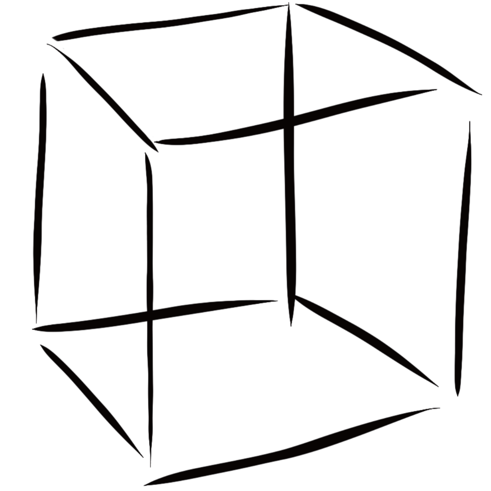

Welcome to the Cube Test!
 A couple years ago, I was introduced to the cube test by a friend. It's not the type of test that you need to worry about passing. It's just like those personality tests that you might see in a magazine or something. I don't know if it's accurate, but it's definitely a fun test to put your friends through at parties.
A couple years ago, I was introduced to the cube test by a friend. It's not the type of test that you need to worry about passing. It's just like those personality tests that you might see in a magazine or something. I don't know if it's accurate, but it's definitely a fun test to put your friends through at parties.
What is the Cube Test?
The cube test involves two people, a participant and a guide. The guide will ask a series of questions to the participant which will cause the participant to imagine a desert with various elements. These elements, in turn, represent various aspects of the participants life, such as their:
- Friends
- Love
- Attitude
- Emotions
After the test is over, it is the guide's job to translate the elements of the participant's desert into those four aspects of the participant's life.